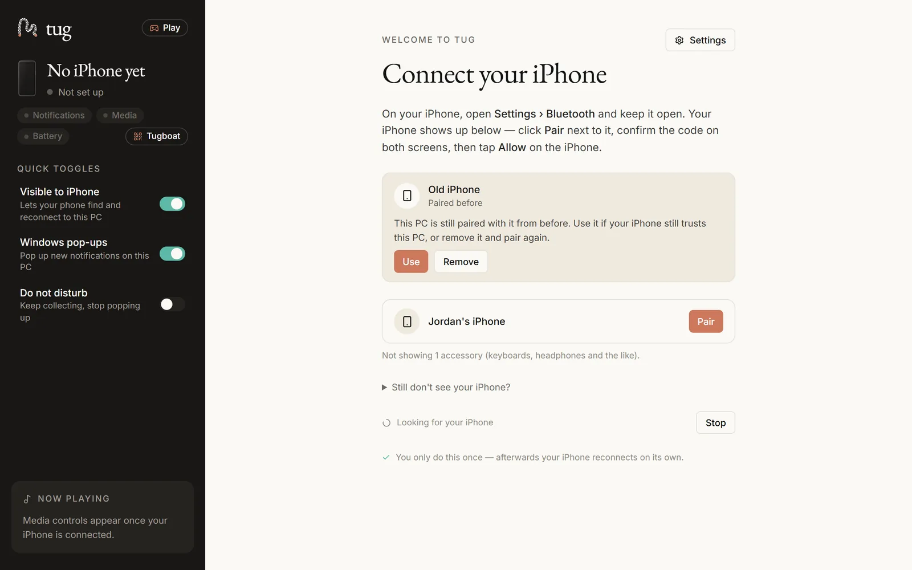
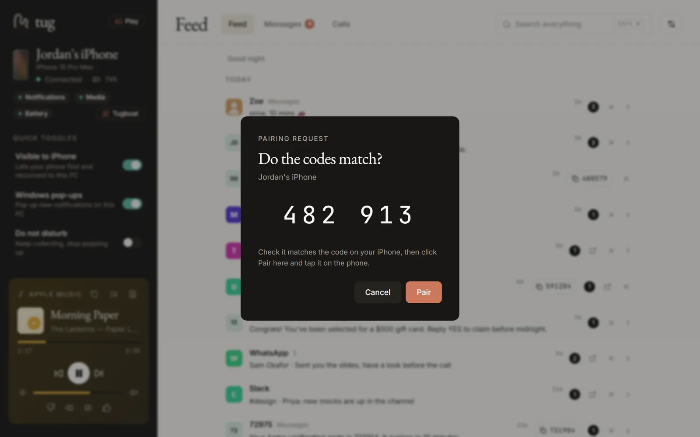

Pair once, and you're done.
Setting up tug takes a couple of minutes: install it, pair your iPhone over Bluetooth, and turn on three switches on the phone. After that it reconnects by itself.
What you need
- Windows 10 version 2004 or later, or Windows 11, on an x64 PC. ARM64 PCs run it under emulation, untested.
- A Bluetooth LE adapter that can act as a peripheral. Most Bluetooth 5 adapters can; some Realtek, MediaTek and older adapters can't. tug tells you if yours can't, and a Bluetooth 5 USB adapter fixes it.
- An iPhone. Android phones can't pair with tug yet (Tugboat works from Android browsers).
- WebView2 Runtime, already part of Windows 11 and up-to-date Windows 10.
- For Tugboat: an IPv4 home or office Wi-Fi network set to Private in Windows.
The app is in English for now.
Install
- Download the installer,
tug-<version>-setup.exe, from tug's latest release on GitHub. - Run it. It installs for your Windows account only, with no admin rights needed.
Windows will be cautious, because the installer isn't code-signed yet. Signing is planned.
SmartScreen shows "Windows protected your PC". Click More info, check the file is the one you downloaded from tug's Releases page, then click Run anyway.
Smart App Control (Windows 11, on by default on some fresh installs) may block unsigned apps outright, with no Run anyway. If it does, tug can't be installed on that PC until releases are signed. Turning Smart App Control off may not be reversible without resetting Windows, so think twice before you do.
To check your download wasn't changed, compare its SHA-256 checksum with the one in that release's notes. In PowerShell:
Get-FileHash .\tug-<version>-setup.exe -Algorithm SHA256After that, tug keeps itself up to date: new versions download quietly, are checked against tug's signing key, and install when you click Update.
Pair your iPhone
tug opens with a Connect your iPhone panel (it's also in Settings › iPhone).

- On the iPhone, open Settings › Bluetooth and keep it open. tug lists your phone by name.
- Click Pair, check the code in tug matches the one on the phone, and confirm on both. That one pairing brings notifications, music, battery and texts.
- Tap Allow on the iPhone when it asks.
- Turn on the switches tug shows, in iPhone Settings › Bluetooth › ⓘ next to this PC:
- Share System Notifications, for the Feed,
- Show Notifications, for texts,
- Sync Contacts, for names, photos and recent calls.

That's it. From now on tug reconnects by itself when the phone comes back in range, after a Bluetooth blip, and when the PC wakes from sleep.
Optional: bring in your full message history
iOS doesn't share texts you send from the iPhone itself, and on a fresh install it shares only the newest 10 incoming texts. If you have a backup of your iPhone on this PC (from the Apple Devices app or iTunes, encrypted or not), Settings › Messages › Bring in your full history copies in your conversations, the texts you sent included, with their photos and videos, as a snapshot as of the backup's date. It all stays on your PC, and Remove imported history takes it out again. Group chats stay on your iPhone.
If something's off
Message text is missing from notifications
iOS only shares what the lock screen shows. On the iPhone, set Settings › Notifications › Show Previews to Always.
Nothing connects after the iPhone restarted
iOS keeps accessories out until the phone is unlocked once after a restart. tug says "Unlock your iPhone" and reconnects by itself as soon as you do.
tug says my Bluetooth adapter can't host a connection
Some adapters (some Realtek, MediaTek and older ones) can't act as a Bluetooth LE peripheral, which tug needs. A Bluetooth 5 USB adapter fixes it.
My iPhone doesn't show up in the list
Keep Settings › Bluetooth open on the iPhone, and check Visible to iPhone is on in tug's sidebar. Pairing from the iPhone's side or from Windows' "Add a device" works too. tug also explains common problems in plain words, such as more than one iPhone paired, or an iPhone that has forgotten this PC (with Pair again).
Tugboat can't connect
The phone and PC need to be on the same Wi-Fi, set to Private in Windows. Guest networks and VPNs can get in the way. tug never changes your firewall; its "Can't connect?" help walks through it.
Still stuck? Open an issue on GitHub. Settings › iPhone › Copy diagnostics copies recent logs with numbers, names and addresses removed, if you'd like to include them.